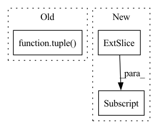

Pattern ID :4585
Before Change
if abs_boxes.shape[1] == 5:
boxes_size = np.minimum(abs_boxes[:, 2], abs_boxes[:, 3])
polys = np.stack([
rbbox_to_polygon(tuple( rbbox) ) for rbbox in abs_boxes // type: ignore[arg-type]
], axis=0)
else:
boxes_size = np.minimum(abs_boxes[:, 2] - abs_boxes[:, 0], abs_boxes[:, 3] - abs_boxes[:, 1])After Change
cv2.fillPoly(seg_target[idx], [poly.astype(np.int32)], 1)
else:
if box.shape == (4, 2):
box = [np.min(box[:, 0]), np.min(box[:, 1]), np.max(box[:, 0] ), np.max(box[:, 1])]
seg_target[idx, box[1]: box[3] + 1, box[0]: box[2] + 1] = True
// top edge
edge_mask[idx, box[1], box[0]: min(box[2] + 1, w)] = TrueIn pattern: SUPERPATTERN
Frequency: 5
Non-data size: 3
Instances Fragment ID: 16545392
Project Name: mindee/doctr
Commit Name: e8583f38a649dc76153b9cbf4f07c025c54cab57
Time: 2021-12-26
Author: charles@mindee.co
File Name: doctr/models/detection/linknet/base.py
M Class Name: _LinkNet
N Class Name: _LinkNet
M Method Name: build_target(3)
N Method Name: build_target(3)
M Parent Class: BaseModel
N Parent Class: BaseModel
M File Name: doctr/models/detection/linknet/base.py
N File Name: doctr/models/detection/linknet/base.py
M Start Line: 174
M End Line: 188
N Start Line: 135
N End Line: 161
Before Change
crop_ends = [x.shape[0], x.shape[1], x.shape[2]]
for dim in im_size:
crop_ends.append(int(dim))
x = x[tuple( map(slice, crop_starts, crop_ends)) ]
// scaling
scaling_factor = tf.cast(tf.reduce_prod(grid_size), "complex64")After Change
// crop to output size
x = x[:, :, :int(im_size[0]), :int(im_size[1])]
if tf.size(grid_size) == 3:
x = x[..., :int(im_size[2])]
// scaling
scaling_factor = tf.cast(tf.reduce_prod(grid_size), "complex64")
if norm == "ortho": Fragment ID: 16545390
Project Name: zaccharieramzi/tfkbnufft
Commit Name: 57d38b3ec6acbbeb2fbe097af88f1cdba726e282
Time: 2020-03-01
Author: zaccharie.ramzi@gmail.com
File Name: tfkbnufft/nufft/fft_functions.py
M Class Name: AnonimousClass
N Class Name: AnonimousClass
M Method Name: ifft_and_scale_on_gridded_data(5)
N Method Name: ifft_and_scale_on_gridded_data(5)
M Parent Class:
N Parent Class:
M File Name: tfkbnufft/nufft/fft_functions.py
N File Name: tfkbnufft/nufft/fft_functions.py
M Start Line: 73
M End Line: 82
N Start Line: 73
N End Line: 83
Before Change
for bind in range(griddat.shape[0]):
for riind in range(griddat.shape[1]):
griddat[bind, riind].index_put_(
tuple( arr_ind.unsqueeze(0)) ,
tmp[bind, riind],
accumulate=True
)After Change
// offset from k-space to first coef loc
kofflist = 1 + \
tf.cast(tf.floor(tm - numpoints[:, None] / 2.0), int_type)
// initialize output array
griddat = tf.zeros( Fragment ID: 16545386
Project Name: zaccharieramzi/tfkbnufft
Commit Name: e1123a8893ee7aeee9593a67d2151f8d860f384a
Time: 2020-03-01
Author: zaccharie.ramzi@gmail.com
File Name: tfkbnufft/nufft/interp_functions.py
M Class Name: AnonimousClass
N Class Name: AnonimousClass
M Method Name: run_interp_back(3)
N Method Name: run_interp_back(3)
M Parent Class:
N Parent Class:
M File Name: tfkbnufft/nufft/interp_functions.py
N File Name: tfkbnufft/nufft/interp_functions.py
M Start Line: 160
M End Line: 205
N Start Line: 161
N End Line: 190
Before Change
)
scales = self.hyper_synthesis(hyper_latent_decoded)
if scales.shape[2:] != tuple( latent_shape) :
scales = _resize(scales, latent_shape)
indexes = self.image_bottleneck.build_indexes(scales) // type: ignoreAfter Change
latent_decoded = self.image_bottleneck.decompress(latent_strings, indexes) // type: ignore
reconstruction = self.image_synthesis(latent_decoded).clamp_(0, 1)
h, w = image_shape
return reconstruction[..., :h, :w]
def load_state_dict(self, state_dict):
Updates the model"s parameters from a saved dictionary. Fragment ID: 16545380
Project Name: facebookresearch/neuralcompression
Commit Name: 6c201298781b40cbc9d1206c1b81e4a6c4669de3
Time: 2022-12-08
Author: desi.r.ivanova@gmail.com
File Name: neuralcompression/models/scale_hyperprior.py
M Class Name: ScaleHyperprior
N Class Name: ScaleHyperprior
M Method Name: decompress(6)
N Method Name: decompress(7)
M Parent Class: nn.Module
N Parent Class: nn.Module
M File Name: neuralcompression/models/scale_hyperprior.py
N File Name: neuralcompression/models/scale_hyperprior.py
M Start Line: 457
M End Line: 501
N Start Line: 479
N End Line: 481
Before Change
@staticmethod
def collate_fn(batch):
return tuple( zip(*batch)) After Change
def collate_fn(batch):
im, label = zip(*batch) // transposed
for i, lb in enumerate(label):
lb[:, 0] = i // add target image index for build_targets()
return torch.stack(im, 0), torch.cat(label, 0) Fragment ID: 16545379
Project Name: alessandromondin/yolov5m
Commit Name: 9f286af8cc674bfcffc82f0684a1c52c33a36834
Time: 2022-11-17
Author: alessandromondin00@gmail.com
File Name: dataset_ultra.py
M Class Name: MS_COCO_2017
N Class Name: MS_COCO_2017
M Method Name: collate_fn(1)
N Method Name: collate_fn(1)
M Parent Class: Dataset
N Parent Class: Dataset
M File Name: dataset_ultra.py
N File Name: dataset_ultra.py
M Start Line: 147
M End Line: 147
N Start Line: 151
N End Line: 154